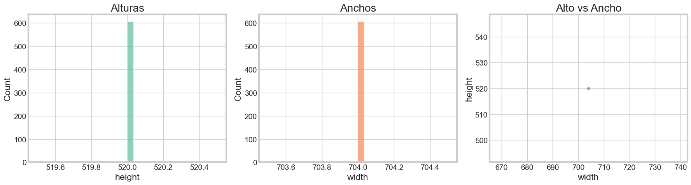
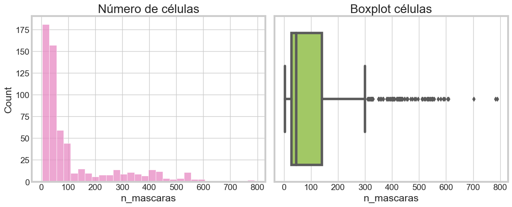
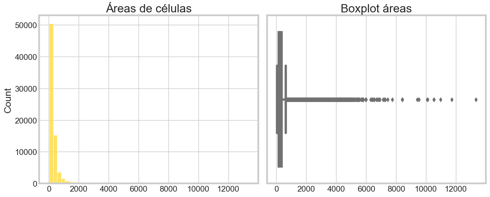
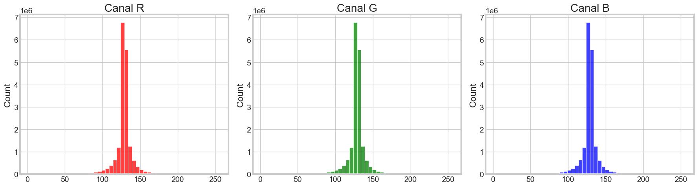
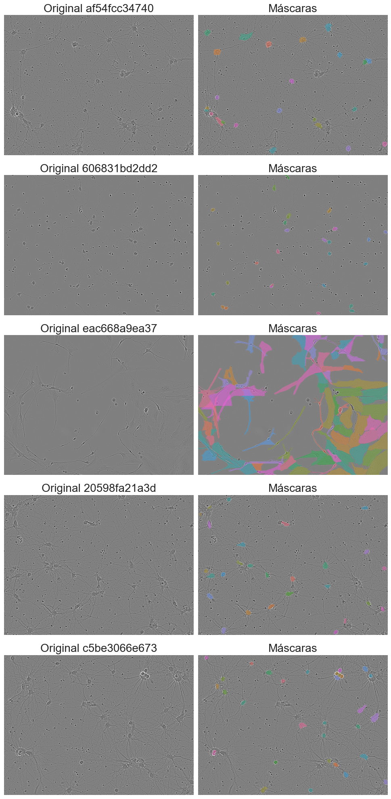
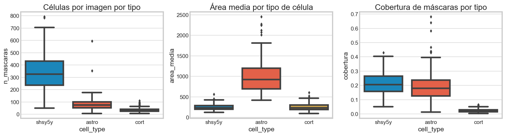
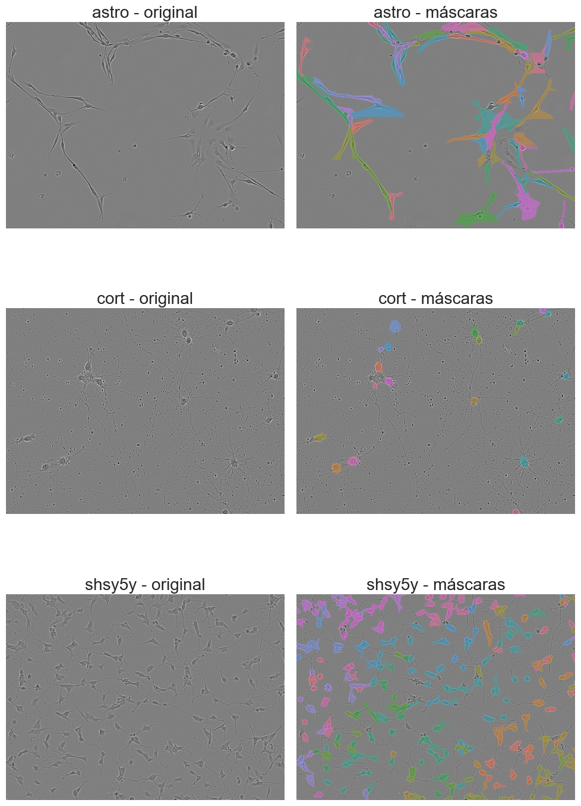

Analisis Exploratorio de datos#
Librerias#
import os
import cv2
import random
import math
import numpy as np
import pandas as pd
import plotly.express as px
import matplotlib.pyplot as plt
import matplotlib.patches as patches
plt.rcParams.update({'font.size': 18})
plt.style.use('fivethirtyeight')
import seaborn as sns
import matplotlib
from dask import bag, diagnostics
from mpl_toolkits.mplot3d import Axes3D
from termcolor import colored
from tqdm import tqdm
import torch
import torch.nn as nn
import torch.optim as optim
from torch.nn import functional as F
import torch.backends.cudnn as cudnn
from torch.optim.lr_scheduler import ReduceLROnPlateau
from torch.utils.data import DataLoader, Dataset, sampler
from sklearn.model_selection import KFold
import warnings
warnings.simplefilter('ignore')
# Activate pandas progress apply bar
tqdm.pandas()
class config:
DIRECTORY_PATH = r"C:\Users\Hp\Documents\Deep_learning\Imagenes\sartorius-cell-instance-segmentation"
TRAIN_CSV = DIRECTORY_PATH + r"\train.csv"
TRAIN_PATH = DIRECTORY_PATH + r"\train"
TEST_PATH = DIRECTORY_PATH + r"\test"
TRAIN_SEMI_SUPERVISED_PATH = DIRECTORY_PATH + r"\train_semi_supervised"
SEED = 0
# (336, 336)
IMAGE_RESIZE = (224, 224)
Funciones#
def getImagePaths(path):
"""
Function to Combine Directory Path with individual Image Paths
parameters: path(string) - Path of directory
returns: image_names(string) - Full Image Path
"""
image_names = []
for dirname, _, filenames in os.walk(path):
for filename in tqdm(filenames):
fullpath = os.path.join(dirname, filename)
image_names.append(fullpath)
return image_names
Cargado de datos e imagenes#
df_train = pd.read_csv(config.TRAIN_CSV)
train_images_path = getImagePaths(config.TRAIN_PATH)
test_images_path = getImagePaths(config.TEST_PATH)
100%|██████████| 606/606 [00:00<00:00, 396900.10it/s]
100%|██████████| 3/3 [00:00<00:00, 2357.23it/s]
df_train.head()
| id | annotation | width | height | cell_type | plate_time | sample_date | sample_id | elapsed_timedelta | |
|---|---|---|---|---|---|---|---|---|---|
| 0 | 0030fd0e6378 | 118145 6 118849 7 119553 8 120257 8 120961 9 1... | 704 | 520 | shsy5y | 11h30m00s | 2019-06-16 | shsy5y[diff]_E10-4_Vessel-714_Ph_3 | 0 days 11:30:00 |
| 1 | 0030fd0e6378 | 189036 1 189739 3 190441 6 191144 7 191848 8 1... | 704 | 520 | shsy5y | 11h30m00s | 2019-06-16 | shsy5y[diff]_E10-4_Vessel-714_Ph_3 | 0 days 11:30:00 |
| 2 | 0030fd0e6378 | 173567 3 174270 5 174974 5 175678 6 176382 7 1... | 704 | 520 | shsy5y | 11h30m00s | 2019-06-16 | shsy5y[diff]_E10-4_Vessel-714_Ph_3 | 0 days 11:30:00 |
| 3 | 0030fd0e6378 | 196723 4 197427 6 198130 7 198834 8 199538 8 2... | 704 | 520 | shsy5y | 11h30m00s | 2019-06-16 | shsy5y[diff]_E10-4_Vessel-714_Ph_3 | 0 days 11:30:00 |
| 4 | 0030fd0e6378 | 167818 3 168522 5 169225 7 169928 8 170632 9 1... | 704 | 520 | shsy5y | 11h30m00s | 2019-06-16 | shsy5y[diff]_E10-4_Vessel-714_Ph_3 | 0 days 11:30:00 |
df_train.info()
<class 'pandas.core.frame.DataFrame'>
RangeIndex: 73585 entries, 0 to 73584
Data columns (total 9 columns):
# Column Non-Null Count Dtype
--- ------ -------------- -----
0 id 73585 non-null object
1 annotation 73585 non-null object
2 width 73585 non-null int64
3 height 73585 non-null int64
4 cell_type 73585 non-null object
5 plate_time 73585 non-null object
6 sample_date 73585 non-null object
7 sample_id 73585 non-null object
8 elapsed_timedelta 73585 non-null object
dtypes: int64(2), object(7)
memory usage: 5.1+ MB
print(f"Training Dataset Shape: {df_train.shape}")
Training Dataset Shape: (73585, 9)
for col in df_train.columns:
print(col + ":" + (str(len(df_train[col].unique()))))
id:606
annotation:73470
width:1
height:1
cell_type:3
plate_time:8
sample_date:18
sample_id:403
elapsed_timedelta:8
print(f"Number of train images: {(len(train_images_path))}")
print(f"Number of test images: {(len(test_images_path))}")
Number of train images: 606
Number of test images: 3
def plot_distribution(x):
fig = px.histogram(
df_train,
x = x,
width = 800,
height = 500,
)
fig.show()
plot_distribution('cell_type')
plot_distribution('plate_time')
plot_distribution('elapsed_timedelta')
def rle_decode(mask_rle, shape):
'''
mask_rle: string RLE (start length)
shape: (height, width)
Returns: máscara binaria (h, w)
'''
s = list(map(int, mask_rle.split()))
starts = np.array(s[0::2]) - 1
lengths = np.array(s[1::2])
ends = starts + lengths
img = np.zeros(shape[0] * shape[1], dtype=np.uint8)
for start, end in zip(starts, ends):
img[start:end] = 1
return img.reshape(shape)
def rle_area(mask_rle):
s = mask_rle.split()
lengths = list(map(int, s[1::2]))
return sum(lengths)
Construccion de dataframe#
def compute_mask_area(rle: str) -> int:
"""Área de una máscara usando RLE (sin decodificar)."""
if pd.isna(rle):
return 0
s = list(map(int, rle.split()))
return sum(s[1::2]) # suma de longitudes
def build_dataframe(df_train, images_path):
records = []
grouped = df_train.groupby('id')
for img_id, grp in tqdm(grouped, desc='Procesando imágenes'):
# metadata básica
h = grp['height'].iloc[0]
w = grp['width'].iloc[0]
cell_type = grp['cell_type'].iloc[0]
# ruta imagen
image_path = os.path.join(images_path, img_id + '.png') # cambia a .tif si aplica
# máscaras válidas (evita NaN)
annotations = grp['annotation'].dropna()
# número de máscaras
n_masks = len(annotations)
# áreas individuales
areas = [compute_mask_area(rle) for rle in annotations]
# manejar edge case: imágenes sin máscaras
if len(areas) == 0:
area_total = 0
area_mean = 0
area_max = 0
area_min = 0
else:
area_total = sum(areas)
area_mean = np.mean(areas)
area_max = max(areas)
area_min = min(areas)
records.append({
'id_imagen' : img_id,
'ruta_imagen' : image_path,
'cell_type' : cell_type,
'width' : w,
'height' : h,
'n_mascaras' : n_masks,
'area_total' : area_total,
'area_media' : area_mean,
'area_max' : area_max,
'area_min' : area_min,
'areas' : areas,
})
return pd.DataFrame(records)
df_img = build_dataframe(df_train, config.TRAIN_PATH)
print(df_img.shape)
df_img.head()
Procesando imágenes: 100%|██████████| 606/606 [00:00<00:00, 1163.76it/s]
(606, 11)
| id_imagen | ruta_imagen | cell_type | width | height | n_mascaras | area_total | area_media | area_max | area_min | areas | |
|---|---|---|---|---|---|---|---|---|---|---|---|
| 0 | 0030fd0e6378 | C:\Users\Hp\Documents\Deep_learning\Imagenes\s... | shsy5y | 704 | 520 | 395 | 113307 | 286.853165 | 757 | 46 | [498, 228, 301, 521, 327, 178, 345, 154, 283, ... |
| 1 | 0140b3c8f445 | C:\Users\Hp\Documents\Deep_learning\Imagenes\s... | astro | 704 | 520 | 108 | 86735 | 803.101852 | 7126 | 138 | [1282, 673, 577, 138, 450, 467, 1067, 808, 524... |
| 2 | 01ae5a43a2ab | C:\Users\Hp\Documents\Deep_learning\Imagenes\s... | cort | 704 | 520 | 36 | 11382 | 316.166667 | 522 | 149 | [262, 458, 196, 204, 522, 236, 345, 161, 149, ... |
| 3 | 026b3c2c4b32 | C:\Users\Hp\Documents\Deep_learning\Imagenes\s... | cort | 704 | 520 | 42 | 7660 | 182.380952 | 355 | 84 | [172, 182, 151, 197, 156, 187, 175, 126, 245, ... |
| 4 | 029e5b3b89c7 | C:\Users\Hp\Documents\Deep_learning\Imagenes\s... | cort | 704 | 520 | 34 | 5753 | 169.205882 | 277 | 107 | [212, 125, 116, 223, 211, 221, 107, 188, 183, ... |
df_img.info()
<class 'pandas.core.frame.DataFrame'>
RangeIndex: 606 entries, 0 to 605
Data columns (total 11 columns):
# Column Non-Null Count Dtype
--- ------ -------------- -----
0 id_imagen 606 non-null object
1 ruta_imagen 606 non-null object
2 cell_type 606 non-null object
3 width 606 non-null int64
4 height 606 non-null int64
5 n_mascaras 606 non-null int64
6 area_total 606 non-null int64
7 area_media 606 non-null float64
8 area_max 606 non-null int64
9 area_min 606 non-null int64
10 areas 606 non-null object
dtypes: float64(1), int64(6), object(4)
memory usage: 52.2+ KB
Analisis de graficos de altura y anchura#
sns.set_style("whitegrid")
# Paletas
palette_main = sns.color_palette("Set2")
palette_alt = sns.color_palette("husl", 8)
fig, axes = plt.subplots(1, 3, figsize=(18, 5))
# Alturas
sns.histplot(df_img['height'], bins=30, color=palette_main[0], ax=axes[0])
axes[0].set_title('Alturas')
# Anchos
sns.histplot(df_img['width'], bins=30, color=palette_main[1], ax=axes[1])
axes[1].set_title('Anchos')
# Scatter
sns.scatterplot(
x=df_img['width'],
y=df_img['height'],
color=palette_main[2],
alpha=0.6,
ax=axes[2]
)
axes[2].set_title('Alto vs Ancho')
plt.tight_layout()
plt.show()

podemos observar que las imagenes tienen 520 de alto y 704 de ancho y todas tienen las mismas dimensiones
Analisis de celulas#
fig, axes = plt.subplots(1, 2, figsize=(12, 5))
# Histograma
sns.histplot(df_img['n_mascaras'], bins=30, color=palette_main[3], ax=axes[0])
axes[0].set_title('Número de células')
# Boxplot
sns.boxplot(x=df_img['n_mascaras'], color=palette_main[4], ax=axes[1])
axes[1].set_title('Boxplot células')
plt.tight_layout()
plt.show()

Análisis exploratorio: distribución del número de células (máscaras)
Se presenta la distribución del número de máscaras por imagen en el dataset de Sartorius, a través de un histograma y un diagrama de caja (boxplot), con el objetivo de caracterizar la complejidad estructural de las imágenes.
Distribución de frecuencias
El histograma evidencia que la variable n_mascaras presenta una distribución fuertemente sesgada a la derecha. La mayoría de las imágenes contienen un número relativamente bajo de células (principalmente en el rango de 0 a 100), mientras que existe una cola larga que se extiende hasta valores cercanos a 800 máscaras.
Este comportamiento indica la presencia de un desbalance en la densidad celular, donde predominan imágenes simples (pocas células) frente a un menor número de imágenes altamente densas.
Análisis de dispersión
El boxplot confirma los hallazgos anteriores:
La mediana se ubica en valores bajos, consistente con la concentración de datos en imágenes poco densas.
El rango intercuartílico (IQR) es relativamente estrecho y se concentra en valores bajos.
Se observan numerosos valores atípicos (outliers) hacia la derecha, correspondientes a imágenes con alta densidad celular.
Estos resultados evidencian que la distribución no es normal y está dominada por valores extremos en el extremo superior.
Implicaciones para el modelado
La estructura observada tiene varias implicaciones relevantes:
Existe un desbalance en la complejidad de las muestras, lo que puede sesgar el entrenamiento hacia casos más simples.
Los modelos pueden presentar dificultades para generalizar en imágenes con alta densidad celular.
Métricas globales de desempeño podrían estar dominadas por ejemplos de baja complejidad.
all_areas = [area for sublist in df_img['areas'] for area in sublist]
fig, axes = plt.subplots(1, 2, figsize=(12, 5))
# Histograma
sns.histplot(all_areas, bins=50, color=palette_main[5], ax=axes[0])
axes[0].set_title('Áreas de células')
# Boxplot
sns.boxplot(x=all_areas, color=palette_main[6], ax=axes[1])
axes[1].set_title('Boxplot áreas')
plt.tight_layout()
plt.show()

Análisis exploratorio: distribución de áreas de células
Se analiza la distribución de las áreas de las células segmentadas en el dataset de Sartorius mediante un histograma y un diagrama de caja (boxplot), con el fin de comprender la variabilidad en el tamaño de los objetos de interés.
Distribución de frecuencias
El histograma muestra que las áreas celulares presentan una distribución altamente sesgada a la derecha. La gran mayoría de las células tienen áreas pequeñas, concentrándose en los primeros rangos, mientras que existe una cola larga que alcanza valores extremadamente altos (por encima de 10,000).
Este patrón indica que predominan células pequeñas, coexistiendo con un número reducido de células de gran tamaño.
Análisis de dispersión
El boxplot refuerza estos hallazgos:
La mediana se encuentra en valores bajos, reflejando la predominancia de células pequeñas.
El rango intercuartílico (IQR) es estrecho y concentrado en áreas pequeñas.
Se identifican numerosos valores atípicos (outliers) hacia valores altos, correspondientes a células significativamente más grandes que la mayoría.
Esto evidencia una distribución no normal, con presencia marcada de valores extremos.
Implicaciones para el modelado
La heterogeneidad en el tamaño de las células tiene implicaciones importantes:
Los modelos pueden favorecer la detección de células pequeñas, debido a su alta frecuencia en el dataset.
Las células grandes, al ser menos frecuentes, pueden ser más difíciles de segmentar correctamente.
Existe riesgo de sesgo en métricas globales, donde el desempeño en objetos pequeños domine la evaluación.
Analisis de pixeles y canales de color#
pixel_values = []
# sample para no cargar todo el dataset (muy importante)
sample_df = df_img.sample(min(50, len(df_img)), random_state=0)
for path in sample_df['ruta_imagen']:
img = cv2.imread(path)
if img is None:
continue
img = cv2.cvtColor(img, cv2.COLOR_BGR2RGB)
# convertir a lista de píxeles (N x 3)
pixel_values.append(img.reshape(-1, 3))
# concatenar todo
pixel_values = np.vstack(pixel_values)
fig, axes = plt.subplots(1, 3, figsize=(18, 5))
channels = ['R', 'G', 'B']
colors = ['red', 'green', 'blue']
for i in range(3):
sns.histplot(pixel_values[:, i], bins=50, color=colors[i], ax=axes[i])
axes[i].set_title(f'Canal {channels[i]}')
plt.tight_layout()
plt.show()

Análisis exploratorio: distribución de intensidades RGB
Se analiza la distribución de intensidades de los canales de color RGB (Red, Green y Blue) en las imágenes del dataset de Sartorius, con el objetivo de identificar patrones de iluminación, contraste y composición cromática presentes en los datos.
Distribución de intensidades por canal
Los histogramas correspondientes a los canales R, G y B presentan comportamientos muy similares:
Las distribuciones se encuentran altamente concentradas en un rango estrecho de intensidades, aproximadamente entre 110 y 145.
Se observa una forma aproximadamente simétrica y unimodal alrededor de un valor central cercano a 128.
No existen concentraciones relevantes en valores extremos cercanos a 0 o 255.
Esto sugiere que las imágenes poseen una iluminación relativamente homogénea y una exposición bien controlada.
Comparación entre canales
Los tres canales presentan distribuciones prácticamente equivalentes:
No se evidencia predominancia significativa de un color específico.
Las diferencias entre canales son mínimas, lo que indica una composición cromática balanceada.
La similitud entre distribuciones sugiere baja variabilidad en condiciones de adquisición o preprocesamiento de las imágenes.
Implicaciones para el modelado
Los resultados obtenidos tienen varias implicaciones importantes:
La homogeneidad de intensidades puede facilitar el proceso de entrenamiento, reduciendo variaciones asociadas a iluminación.
La ausencia de extremos pronunciados disminuye la probabilidad de saturación o pérdida de información visual.
La similitud entre canales sugiere que gran parte de la información discriminativa podría encontrarse en las estructuras espaciales y texturas, más que en diferencias cromáticas.
import numpy as np
def overlay_masks(image, masks, alpha=0.5):
overlay = image.copy()
colors = sns.color_palette("husl", len(masks))
for mask, color in zip(masks, colors):
color = np.array(color) * 255
overlay[mask == 1] = (
overlay[mask == 1] * (1 - alpha) +
color * alpha
)
return overlay.astype(np.uint8)
fig, axes = plt.subplots(5, 2, figsize=(10, 20))
sample_ids = random.sample(list(df_img['id_imagen']), 5)
for i, img_id in enumerate(sample_ids):
row = df_img[df_img['id_imagen'] == img_id].iloc[0]
path = row['ruta_imagen']
img = cv2.imread(path)
img = cv2.cvtColor(img, cv2.COLOR_BGR2RGB)
h, w = row['height'], row['width']
rles = df_train[df_train['id'] == img_id]['annotation'].dropna().tolist()
masks = [rle_decode(rle, (h, w)) for rle in rles]
overlay = overlay_masks(img, masks)
axes[i, 0].imshow(img)
axes[i, 0].set_title(f'Original {img_id}')
axes[i, 0].axis('off')
axes[i, 1].imshow(overlay)
axes[i, 1].set_title('Máscaras')
axes[i, 1].axis('off')
plt.tight_layout()
plt.show()

# 1. Métricas por cell_type
fig, axes = plt.subplots(1, 3, figsize=(18, 5))
sns.boxplot(data=df_img, x='cell_type', y='n_mascaras', ax=axes[0])
axes[0].set_title('Células por imagen por tipo')
sns.boxplot(data=df_img, x='cell_type', y='area_media', ax=axes[1])
axes[1].set_title('Área media por tipo de célula')
# Cobertura = qué % de la imagen está anotado
df_img['cobertura'] = df_img['area_total'] / (df_img['height'] * df_img['width'])
sns.boxplot(data=df_img, x='cell_type', y='cobertura', ax=axes[2])
axes[2].set_title('Cobertura de máscaras por tipo')
plt.tight_layout()
plt.show()

Análisis exploratorio: características por tipo de célula
Se analiza el comportamiento de las distintas clases celulares presentes en el dataset de Sartorius (shsy5y, astro y cort) mediante métricas relacionadas con la cantidad de células por imagen, el área promedio de las máscaras y la cobertura total de segmentación.
Número de células por imagen
El primer boxplot muestra diferencias significativas en la cantidad de células presentes por imagen según el tipo celular:
shsy5y presenta la mayor cantidad de máscaras por imagen, con una mediana elevada y una dispersión considerable.
astro muestra una cantidad intermedia de células, aunque con presencia de valores atípicos elevados.
cort posee la menor densidad celular y la distribución más compacta.
Además, se observan numerosos valores extremos, especialmente en shsy5y, donde algunas imágenes alcanzan valores cercanos a 800 máscaras.
Estos resultados evidencian una alta variabilidad en densidad celular entre clases, lo cual implica diferentes niveles de complejidad para el modelo de segmentación.
Área media de las células
El segundo gráfico muestra diferencias importantes en el tamaño promedio de las células:
Las células tipo astro presentan las áreas medias más grandes y la mayor variabilidad.
Las clases shsy5y y cort poseen áreas considerablemente menores y distribuciones más concentradas.
Se identifican múltiples outliers en
astro, indicando la presencia de células excepcionalmente grandes.
Esto sugiere que cada tipo celular posee características morfológicas diferenciadas, particularmente en términos de tamaño.
Cobertura de máscaras por tipo
El tercer boxplot representa la proporción de la imagen cubierta por máscaras celulares:
shsy5y y astro presentan coberturas relativamente altas y similares.
cort muestra coberturas significativamente menores.
La clase
astroexhibe una dispersión elevada y algunos valores extremos que superan el 60% de cobertura.
La diferencia en cobertura indica que ciertas clases generan imágenes mucho más densas y complejas desde el punto de vista espacial.
Implicaciones para el modelado
Las diferencias observadas entre tipos celulares tienen implicaciones importantes:
El modelo deberá aprender patrones morfológicos y espaciales significativamente distintos entre clases.
Las imágenes de
shsy5yyastropueden representar un mayor desafío debido a la alta densidad y superposición potencial de células.Las diferencias en tamaño y cobertura podrían generar sesgos en métricas globales de segmentación.
# 2. Detección de outliers en área
q1, q99 = df_img['area_media'].quantile([0.01, 0.99])
outliers = df_img[(df_img['area_media'] < q1) | (df_img['area_media'] > q99)]
print(f"Imágenes con áreas outlier: {len(outliers)}")
print(outliers[['id_imagen', 'cell_type', 'n_mascaras', 'area_media']])
Imágenes con áreas outlier: 14
id_imagen cell_type n_mascaras area_media
31 0eb1d03df587 shsy5y 550 115.796364
48 15aeb12e7a83 astro 47 2240.765957
58 1974fbb27dcf shsy5y 531 113.826742
67 1ce663c98a16 cort 17 118.117647
100 26efe388938c cort 58 105.827586
165 45b966b60d4b astro 29 2066.758621
223 5a05cc33a43d astro 87 2446.563218
231 5c84424f601c astro 74 2117.891892
352 91c06d4f10df astro 80 2006.262500
400 a97d5689d4c2 astro 14 2272.785714
538 e33d521aa9de cort 25 96.440000
554 e92c56871769 cort 4 97.000000
570 eec79772cb99 cort 5 86.800000
602 fe33dfcf4ebd astro 60 2243.433333
Análisis de imágenes con áreas atípicas (outliers)
Se identificaron 14 imágenes con valores atípicos en la variable area_media, correspondientes a casos extremos en el tamaño promedio de las células segmentadas. El análisis de estos outliers permite comprender mejor la variabilidad morfológica presente en el dataset y evaluar posibles implicaciones para el entrenamiento del modelo.
Distribución de los outliers por tipo celular
Los valores atípicos se concentran principalmente en la clase astro, aunque también aparecen algunos casos en shsy5y y cort.
Clase astro
Las imágenes tipo astro presentan los mayores valores de área promedio, alcanzando valores superiores a 2400 píxeles. Ejemplos representativos incluyen:
5a05cc33a43d→ área media ≈ 2446fe33dfcf4ebd→ área media ≈ 224315aeb12e7a83→ área media ≈ 2240
Estos resultados son consistentes con la morfología observada previamente para este tipo celular:
células grandes,
estructuras alargadas,
y extensiones ramificadas.
Además, las imágenes astro suelen contener un número moderado de máscaras, pero cada célula ocupa una región considerable del espacio.
Clase shsy5y
Las imágenes shsy5y identificadas como outliers presentan:
una cantidad extremadamente alta de máscaras (
>500),pero áreas medias relativamente pequeñas (~114 píxeles).
Esto indica escenarios de:
alta densidad celular,
fuerte agrupamiento,
y predominancia de células pequeñas.
Estos casos representan imágenes complejas desde el punto de vista de segmentación por instancia, debido a la proximidad entre objetos.
Clase cort
Los casos atípicos de cort muestran:
muy pocas máscaras,
y áreas medias pequeñas (<120 píxeles).
Aunque aparecen como outliers estadísticos, probablemente corresponden a imágenes extremadamente dispersas o con escasa presencia celular.
Interpretación general
Los outliers identificados no parecen corresponder necesariamente a errores del dataset, sino a casos biológicamente plausibles asociados a diferencias morfológicas reales entre tipos celulares.
En particular:
astrocontribuye principalmente con outliers de gran tamaño celular.shsy5ycontribuye con outliers de alta densidad.cortpresenta escenarios extremos de baja densidad y células pequeñas.
Esto confirma nuevamente la elevada heterogeneidad estructural del dataset.
Implicaciones para el modelado
La presencia de estos casos extremos puede afectar significativamente el desempeño del modelo:
Los outliers de
astropueden dificultar la segmentación de estructuras grandes y ramificadas.Los casos densos de
shsy5yincrementan el riesgo de:sobresegmentación,
subsegmentación,
o fusión de instancias.
Los ejemplos de
cortpueden generar falsos negativos debido al pequeño tamaño celular.
Asimismo, estos casos pueden influir desproporcionadamente en métricas globales de entrenamiento y evaluación.
# 3. Imágenes de ejemplo por tipo de célula
fig, axes = plt.subplots(3, 2, figsize=(10, 15))
for i, ctype in enumerate(['astro', 'cort', 'shsy5y']):
sample = df_img[df_img['cell_type'] == ctype].sample(1).iloc[0]
img = cv2.cvtColor(cv2.imread(sample['ruta_imagen']), cv2.COLOR_BGR2RGB)
rles = df_train[df_train['id'] == sample['id_imagen']]['annotation'].dropna().tolist()
masks = [rle_decode(rle, (sample['height'], sample['width'])) for rle in rles]
overlay = overlay_masks(img, masks)
axes[i, 0].imshow(img); axes[i, 0].set_title(f'{ctype} - original'); axes[i, 0].axis('off')
axes[i, 1].imshow(overlay); axes[i, 1].set_title(f'{ctype} - máscaras'); axes[i, 1].axis('off')
plt.tight_layout(); plt.show()

Análisis visual comparativo: imágenes originales y máscaras por tipo celular
Se presenta una comparación entre imágenes originales y sus respectivas máscaras de segmentación para los tipos celulares astro, cort y shsy5y, con el objetivo de identificar diferencias morfológicas, espaciales y estructurales relevantes para el proceso de segmentación.
Tipo celular: astro
Las imágenes correspondientes a astro muestran células con:
Morfologías alargadas e irregulares.
Estructuras ramificadas y extensiones finas.
Baja densidad celular relativa, pero con gran ocupación espacial por célula.
Las máscaras reflejan objetos complejos y de geometría variable, con formas no compactas y límites difusos en algunas regiones.
Implicaciones
La segmentación de
astrorepresenta un desafío debido a:contornos delgados,
estructuras ramificadas,
y posibles conexiones entre células.
Los modelos deberán capturar detalles finos y relaciones espaciales complejas.
Tipo celular: cort
Las imágenes de cort presentan:
Baja densidad celular.
Células pequeñas y dispersas.
Gran cantidad de fondo visible.
Las máscaras muestran objetos relativamente compactos y bien separados entre sí.
Implicaciones
La segmentación resulta potencialmente más sencilla por la baja superposición celular.
Sin embargo, el pequeño tamaño de los objetos puede dificultar la detección precisa.
Existe riesgo de falsos negativos en células pequeñas o de bajo contraste.
Tipo celular: shsy5y
Las imágenes de shsy5y exhiben:
Alta densidad celular.
Fuerte agrupamiento espacial.
Mayor uniformidad en tamaño y forma respecto a otras clases.
Las máscaras evidencian una gran cantidad de objetos cercanos entre sí, con regiones potencialmente superpuestas.
Implicaciones
La alta densidad incrementa la complejidad de segmentación.
El modelo debe diferenciar correctamente células adyacentes y evitar fusiones entre máscaras.
Puede existir mayor sensibilidad a errores de separación de instancias.
Comparación global entre tipos celulares
La comparación visual permite identificar diferencias estructurales importantes:
Tipo celular |
Densidad |
Tamaño |
Complejidad morfológica |
|---|---|---|---|
astro |
Media |
Grande |
Alta |
cort |
Baja |
Pequeño |
Baja |
shsy5y |
Alta |
Media |
Media |
Estas diferencias indican que el dataset posee una elevada heterogeneidad visual y morfológica, lo cual representa un reto significativo para los modelos de segmentación.
Implicaciones para el modelado
Las variaciones observadas sugieren que:
El modelo deberá generalizar sobre múltiples escalas y morfologías celulares.
Diferentes clases pueden requerir distintos niveles de sensibilidad espacial.
Las arquitecturas multi-escala y los mecanismos de atención podrían resultar beneficiosos.
Asimismo, las diferencias entre clases justifican:
evaluación estratificada por tipo celular,
augmentations específicas,
y análisis detallado de errores según morfología.